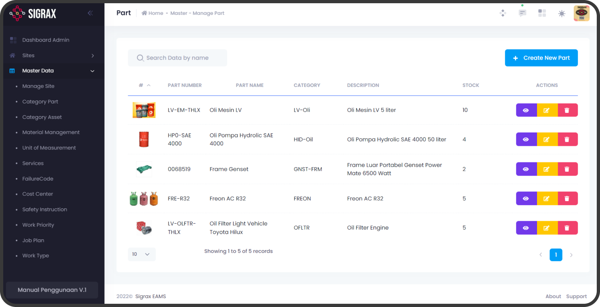

Otomatisasi pemeliharaan mesin pabrik dalam satu sistem terpadu
Sigrax membantu tim maintenance mengontrol kondisi aset mesin, tiket breakdown, jadwal preventive, dan inventaris gudang suku cadang tanpa biaya lisensi tahunan.
-45%
Downtime Tak Terduga
100%
Preventive Terjadwal
Rp 0
Biaya Lisensi Tahunan
24/7
Engineer Lokal On-Site

Dipercaya oleh pabrik manufaktur dan fasilitas industri di Indonesia


Solusi lengkap siklus perawatan pabrik modern
Sigrax menjembatani koordinasi operasional dari teknisi lantai kerja hingga dashboard pengambil keputusan tingkat direksi.
Executive Dashboard & Analitik Downtime
Pantau metrik MTTR (Mean Time to Repair), MTBF (Mean Time Between Failures), dan efektivitas biaya pemeliharaan mesin secara langsung dengan grafik interaktif.
Otomatisasi Preventive
Jadwal inspeksi berkala, checklist tugas terstruktur, dan penugasan teknisi otomatis berdasarkan jam operasional mesin.

Suku Cadang & Gudang
Kontrol stok minimum, riwayat konsumsi per mesin, dan notifikasi pengadaan barang untuk mencegah keterlambatan perbaikan.

Work Order & Manajemen Aset Terpadu
Dokumentasi digital riwayat kerusakan mesin, formulir permohonan kerja (Work Request), dan distribusi tiket perbaikan instan ke teknisi lantai pabrik.

Dirancang untuk alur kerja teknisi dan manajemen
Kemudahan pencatatan data lapangan berpadu dengan kedalaman analitik kebutuhan audit ISO 55000 dan Total Productive Maintenance (TPM).
Visibilitas operasional maintenance 360 derajat
Hilangkan ketidakpastian dalam operasional harian. Pantau distribusi tiket yang selesai, biaya per lini produksi, dan produktivitas teknisi dalam satu dasbor visual yang jernih.
- Monitoring tren biaya aktual vs estimasi anggaran
- Perhitungan otomatis metrik uptime, MTTR, dan MTBF
- Export laporan komprehensif PDF dan Excel siap audit
Hierarki aset mesin terstruktur dari Site hingga Komponen
Strukturkan seluruh aset pabrik Anda dari multi-lokasi (Plant/Site), lini produksi, mesin utama, hingga nomor komponen terkecil dengan kodefikasi standar.
- Digitalisasi manual book dan dokumen teknis per mesin
- Log riwayat kerusakan lengkap dari awal instalasi
- Manajemen lokasi penempatan dan tanggung jawab PIC teknisi
Cegah mesin berhenti karena suku cadang habis
Sistem inventaris suku cadang Sigrax memastikan stok kritis selalu terpantau dengan sistem peringatan dini (Safety Stock Alert).
- Auto-deduction stok saat tiket Work Order selesai dikerjakan
- Riwayat supplier, harga pembelian terakhir, dan lokasi rak gudang
- Laporan mutasi barang dan valuasi inventory real-time
Pencatatan Work Request dan penugasan teknisi tanpa jeda
Operator lini dapat melaporkan kendala mesin secara cepat, sementara supervisor dapat langsung mengalokasikan tugas ke teknisi yang sedang bertugas.
- Prioritisasi status darurat (Emergency Breakdown vs Reguler)
- Checklist verifikasi langkah perbaikan dan foto bukti pengerjaan
- Pencatatan durasi jam kerja teknisi (Labor Hours)

Mengapa industri beralih ke Sigrax CMMS
Perbandingan nyata antara metode spreadsheet konvensional, software luar negeri, dan solusi Sigrax.
| Kriteria Evaluasi | Sigrax CMMS (Indonesia) | Software Luar Negeri | Spreadsheet / Excel Manual |
|---|---|---|---|
| Model Biaya Lisensi | Tanpa Biaya Lisensi Tahunan | Biaya Berlangganan / User / Thn | Gratis (Biaya Tersembunyi Tinggi) |
| Dukungan & Pelatihan On-Site | Tim Engineer Lokal Langsung | Online Ticket / Timezone Berbeda | Tanpa Dukungan Sistem |
| Otomatisasi Preventive Maintenance | Otomatis Berbasis Waktu / Run-Hours | Otomatis | Manual, Sering Terlewat |
| Integrasi Suku Cadang & Gudang | Terintegrasi Otomatis ke Work Order | Tersedia (Add-on berbayar) | Terpisah & Rawan Selisih |
| Kustomisasi SOP Sesuai Pabrik | Fleksibel Disesuaikan Pabrik | Kaku & Biaya Custom Mahal | Fleksibel namun Tidak Terstandar |